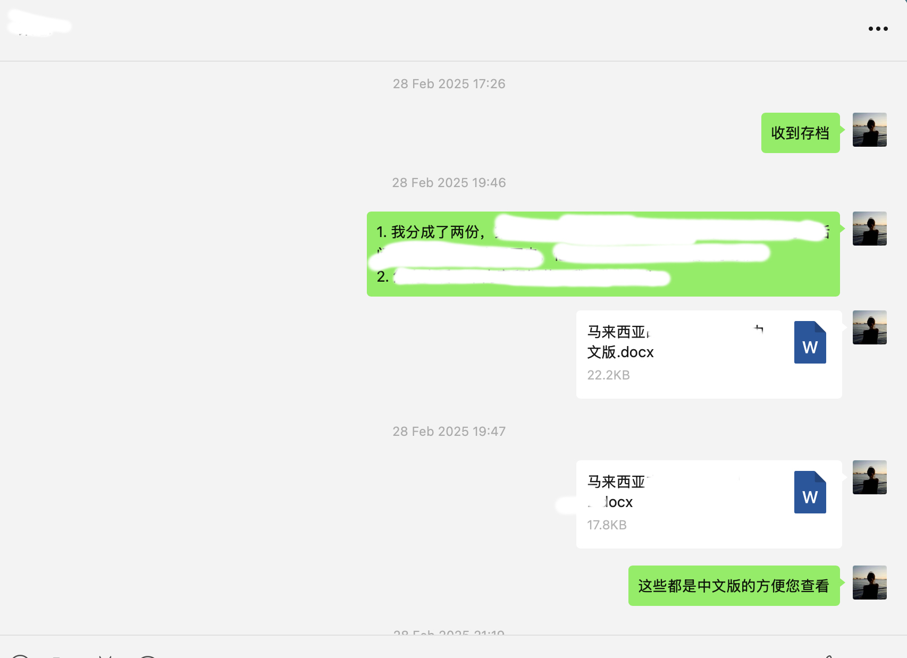
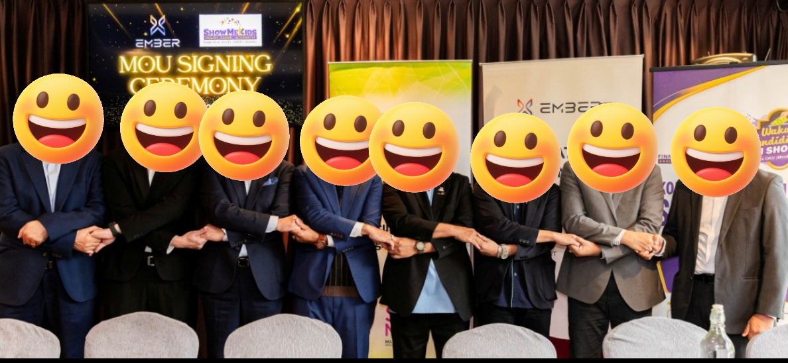

客户场景有差异
师生在教学、备课和自学中关注的功能不同，通用介绍难以回答具体的使用疑问。
PROJECT 02 / CLIENT COMMUNICATION · EXPERIENCE EVENTS
从高校客户的真实使用需求出发，将产品功能转为易理解的讲解与内容，通过宣讲、体验和现场答疑收集反馈，再交由团队跟进改进。
客户洞察 / 产品讲解 / 体验服务 / 反馈闭环
查看服务路径01 / 项目背景与职责
在北京织知玄华智能科技有限公司担任AI产品营销实习生期间，服务高校教学、备课、自学等不同使用场景。客户是否理解功能、能否完成首次使用，以及体验后能否获得有效回复，是贯穿沟通与活动的重点。
我的工作覆盖用户社群、需求调研、公众号内容、高校宣讲与体验活动，并协助东南亚合作对接。线上说明、现场讲解和后续反馈围绕同一批客户需求衔接。
师生在教学、备课和自学中关注的功能不同，通用介绍难以回答具体的使用疑问。
识别客户需求，将产品功能讲成具体使用价值，准备能够支持自助查阅与现场答疑的资料。
管理社群、分类反馈，建设公众号内容，组织高校宣讲与体验；将待确认问题交由产品和业务团队跟进。
汇总100+条反馈、输出30+篇使用内容，期间核心功能使用率提升30%；提出10条优化建议，支持后续试点。
以下展示按场景整理需求的方法，属于作品集演示，不是客户原话或内部调研明细。
先确认课堂任务与教师关注点，再选择相关功能和教师案例，说明功能与任务之间的关系。
先了解材料准备需求，再用示例讲解操作顺序，将关键步骤补充进指南或FAQ。
先了解学习任务与使用障碍，再演示入口、输入和结果查看，帮助用户完成一次体验。
讲解后确认客户是否理解；遇到未确认问题，记录、转交对应团队并跟进回复。
02 / 客户沟通闭环
先听清客户的任务与障碍，再匹配产品讲解和使用内容；通过活动让客户实际体验，记录反馈、协调回复，并将重复问题纳入后续内容与产品建议。
管理用户社群，调研教学、备课、自学场景，将100+条反馈分类，识别关注点与使用障碍。
学习产品功能并准备场景讲解，从0到1建设公众号，输出30+篇使用指南、FAQ及案例，回应具体需求。
对接高校，安排宣讲与体验流程，协同准备演示和案例材料，负责现场组织及使用答疑。
区分已确认答案和待核查问题，将反馈转交产品或业务团队；更新回复与后续待办，支持客户继续使用。
把重复疑问补充到内容，将体验问题整理为10条优化建议，为产品改进和后续高校试点提供参考。
PRODUCT COMMUNICATION / 讲解结构演示
以下为内容结构示例，不是已公开文章的复刻，也不展示内部产品操作或客户原话。
客户任务 → 相关功能 → 操作顺序 → 结果查看 → 注意事项。让首次使用的客户能够沿步骤完成体验。
具体疑问 → 已确认答案 → 补充步骤 → 待核查问题的反馈入口。让重复问题有可持续查阅的说明。
教学或学习目标 → 功能选择 → 使用过程 → 场景价值。帮助客户理解产品功能与自身任务的关系。
03 / 活动执行与合作对接
高校活动将线上介绍变成实际体验。我对接高校、安排流程，并协同产品和业务团队准备演示、FAQ、教师案例及课程材料；现场组织与答疑之后，继续整理问题与跟进事项。
教学、备课、自学需求
体验安排与后续沟通
协同产品团队确认功能与使用说明，准备演示和FAQ，遇到未确认问题记录后转交。
对接高校、安排活动流程，协同准备教师案例及课程材料，负责现场组织和使用答疑。
将现场疑问与社群问题一起分类，补充指南、FAQ及场景内容，形成后续讲解依据。
参与东南亚合作，梳理需求和双方分工，跟进协议签署及交接，协调产品与业务材料。
执行路径：明确客户关注点 → 对齐活动与材料 → 现场体验及答疑 → 整理反馈 → 协调回复和后续安排。
确认活动安排、参与对象与客户关注点，列明材料需求及团队分工。
按使用场景组织产品演示，核对FAQ、教师案例和课程材料。
组织体验流程，回答已确认的使用问题，记录需要后续核查的反馈。
分类问题、同步对应团队，将补充说明纳入内容，将改进建议用于后续试点准备。

04 / 反馈跟进与AI SOP
现场回答解决当下疑问，反馈分类帮助发现重复问题。用AI辅助整理记录与清单初稿，再人工核对产品说明、负责人和回复内容，形成可复用的客户跟进流程。
核对内容客户场景、关注功能、疑问类型及影响使用的障碍。
我的工作汇总社群与调研反馈，分类整理100+条问题，确定内容和讲解重点。
核对内容使用步骤、已确认答案、场景案例与待补充说明。
我的工作整理指南、FAQ与场景内容，协同核对产品演示和活动资料。
核对内容现场疑问、待核查问题、对应团队及后续回复内容。
我的工作整理问题并交由对应团队确认，将回复同步到后续沟通和内容更新。
核对内容重复问题、体验障碍、可补充内容与产品改进方向。
我的工作提出10条优化建议，补充使用说明，支持产品改进和后续高校试点。
按使用场景、功能疑问与体验障碍整理，帮助选择讲解重点。
区分可直接解释的问题与待核查问题，记录回复与后续安排。
确认流程、分工、演示、FAQ和案例材料，让会前准备与会后跟进衔接。
AI + SOP / 可操作的方法演示
以下为作品集流程演示，可勾选查看进度，不记录真实客户信息。AI用于整理初稿，产品说明、客户回复和合作文件仍由人工及对应团队核对。
产出：客户场景与疑问清单
产出：演示、FAQ与案例资料
产出：现场答疑与反馈记录
产出：内容补充与优化建议
05 / COOPERATION EVIDENCE
保留五份已脱敏材料，展示东南亚合作中信息同步、方案反馈与文件跟进。它们对应简历的合作对接部分；客户调研、30+篇内容和功能使用率的内部明细不在本页公开。

同步已有合作信息，整理需要进一步确认的问题。

围绕合作方案同步意见，跟进内部反馈。

整理商讨结果，汇总市场与后续合作相关意见。

发送合作文件，同步待整理的信息与相关问题。

整理并发送相关文件，配合查阅与存档。
06 / 工作结果与复盘
100+条反馈帮助识别讲解重点，30+篇内容支持理解与使用，宣讲和体验补充现场反馈；将问题整理为10条优化建议，再用于内容完善、产品改进及后续高校试点。
管理社群并分类反馈，从0到1建设公众号；使用指南、FAQ与场景案例围绕客户需求组织。
对应简历中的实习期间变化，保留原稿“提升30%”口径；为同期项目结果，未将全部变化归因于个人内容工作。
结合客户行为与体验反馈整理建议，支持产品改进和后续高校试点；建议数量不代表全部已实施。

展示合作项目的团队阶段结果。我的参与范围是需求及分工整理、材料协同、签署跟进和项目交接。
客户沟通需要先识别需求，再选择讲解内容；体验服务需要接住疑问，并让反馈有回复和下一步。AI辅助整理内容与清单，支持同一套流程用于后续沟通和活动准备。